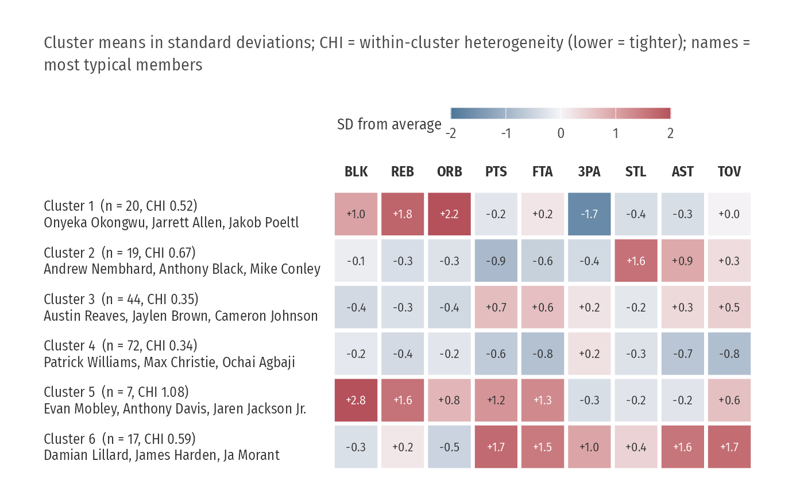

Rows are clusters (labelled with size, heterogeneity index CHI and, if given, a few example members), columns are variables, cells are the cluster mean in standard deviations from the overall mean. One heatmap shows every cluster at once and reads in both directions: across a row (what defines this group) and down a column (who is high on this stat).
Usage
plot_cluster_profiles(
data,
vars,
cluster,
label = NULL,
n_examples = 3,
title = NULL,
subtitle = NULL,
caption = NULL
)Examples
p <- subset(player_seasons, league == "NBA" & minutes >= 1500)
v <- c(PTS = "pts", AST = "ast", REB = "drb", ORB = "orb", BLK = "blk", STL = "stl",
`3PA` = "p3a", FTA = "fta", TOV = "tov")
X <- p[, v] / p$minutes * 36
p[, v] <- X
km <- stats::kmeans(scale(X), 6, nstart = 25)
plot_cluster_profiles(p, v, km$cluster, label = "player")
